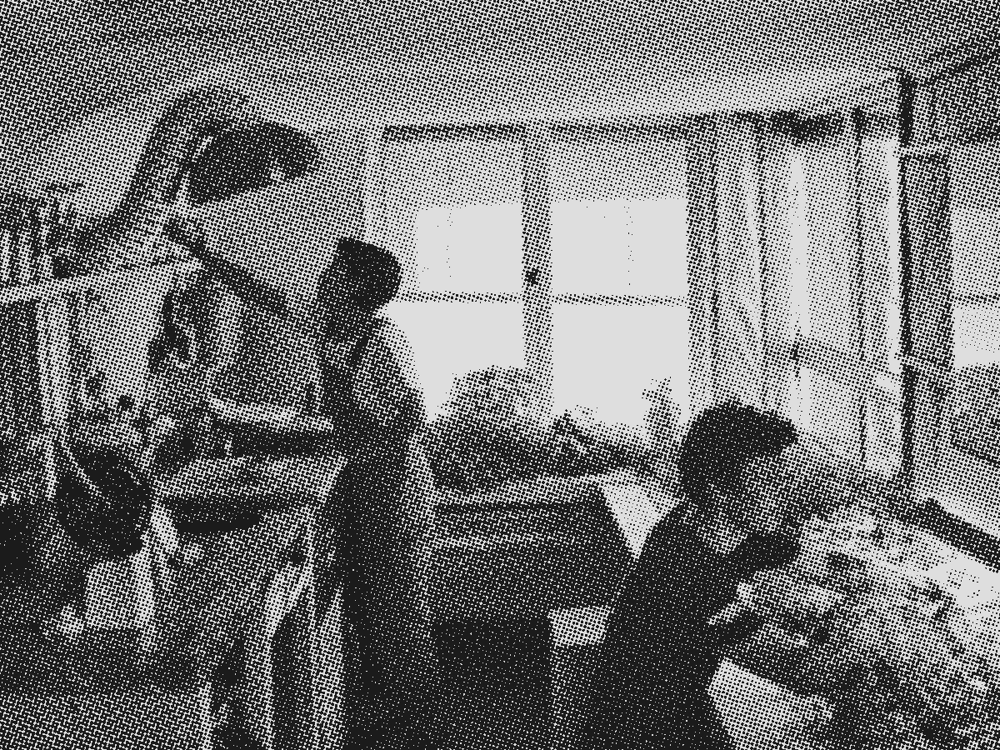

Il existe des technologies et savoir-faire innovants, accessibles à tous et durables pour répondre à nos besoins.
Depuis près de 10 ans, elles ont été reperées à travers le monde, documentées et diffusées gratuitement via internet, des livres et des films.

Appartement expérimental à Boulogne-Billancourt | Crédit photo : Alain de Baudus
Programme Biosphère
Expérimenter un futur durable et désirable dans lequel les humains vivent en symbiose avec les autres espèces vivantes.
Au sein d'une nouvelle association « BIOSPHERE EXPERIENCE », nous concevons des habitats-écosystèmes combinant ces innovations low-techs les unes avec les autres.
Programme Biosphère
Au sein d'une nouvelle association « BIOSPHERE EXPERIENCE », nous concevons des habitats-écosystèmes combinant ces innovations low-techs les unes avec les autres.
Notre mission
Expérimenter un futur durable et désirable dans lequel les humains vivent en symbiose avec les autres espèces vivantes.
2024, une biosphère urbaine
En 2024, l'équipe s'attaque à un nouveau défi: elle applique la démarche low-tech à un milieu urbain dense, en région parisienne.
Pendant 4 mois (de mi-juillet à mi-novembre 2024), un appartement expérimental à Boulogne-Billancourt a servi de laboratoire pour imaginer un mode de vie zéro déchet, divisant par 10 la consommation d'eau, et atteignant les objectifs 2050 de l'ONU en matière de réduction des émissions de gaz à effet de serre, et qui soit à la fois accessible à tous et désirable !
L'appartement, au coeur d'un écosystème d'une vingtaine d'acteurs de différents domaines : élevage de larves pour le recyclage des déchets organiques, culture de champignons et de plantes pour l'alimentation, production de biogaz pour la cuisine, supermarché participatif, ferme bio, etc. a permis de tester des pratiques prospectives pour réfléchir au futur des villes.
En 2023 il mène une seconde expérience avec la designer belge Caroline Pultz, cette fois en milieu aride, dans le désert mexicain. Culture de champignons, de plantes et d’algues, utilisation de l'énergie solaire, matériaux biosourcés, utilisation de l'eau en circuit fermé... Sur 60m², l'écosystème de cette nouvelle Biosphère est un habitat qui ne génère plus de déchets, mais des ressources.
En 2018, Corentin de Chatelperron lance le programme "Biosphère" en expérimentant une combinaison d'innovations low-tech sur une plateforme flottante en Thaïlande. Véritable "explorateur de mode de vie", sa quête est de trouver un mode de vie qui soit à la fois désirable et durable pour le futur.
Nous avons lancé un programme de sciences participatives pour toutes celles et ceux souhaitant tester chez eux des systèmes et pratiques low-tech.
Alimentation, valorisation des déchets ou encore économie d'eau : les 8 missions low-tech abordent des thématiques d'actualité et ont été testées par de nombreuses personnes, partout en France et à l'étranger. Ces expériences citoyennes permettent de collecter un large panel de données techniques, sociologiques, ergonomiques, ou encore psychologiques sur la mise en place et l'usage de low-tech.
Plus de 650 expériences citoyennes ont été menées en France et à l'étranger !
Les missions
Les participants ont démarré les expériences début septembre. Pour celles et ceux ne faisant pas partie du programme, nous vous encourageons à continuer d'explorer les low-tech chez vous !